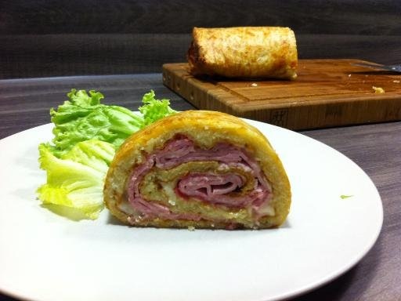

Galette pommes de terre jambon fromage
Ingredients
2×
- 150 g de courgettes
- 300 g de pommes de terre
- 2 oeufs
- 2 c. à s. de lait
- 150 g de comté râpé
- sel
- poivre
- 2 tranches de jambon blanc

Préparation
Étape 1
Râper 150 g de courgettes et 300 g de pommes de terre.
Étape 2
Mélanger 2 oeufs et 2 c. à s. de lait, puis incorporer les légumes et 150 g de comté râpé (en garder une poignée). Ajouter du sel et du poivre.
Étape 3
Étaler en couche régulière sur la plaque du four recouverte de papier cuisson légèrement huilé. Cuire 40min à 180ºC.
Étape 4
Parsemer du reste de fromage et poser 2 tranches de jambon blanc. Rouler le plus serré possible et maintenir au chaud 10 à 15min.